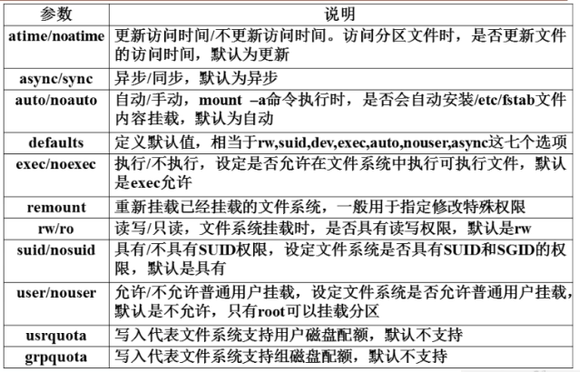

一、用户相关文件
1、/etc/passwd #用户信息文件
root:x:0:0:root:/root:/bin/bash
第一列：用户名
第二列：密码位
第三列：用户ID
0 超级用户ID。如果用户ID为0，代表这个账号是管理员账号。Linux中将普通用户更改为超级用记只需将UID改为0即可。
1-499 系统用户（伪用户）UID。这些UID账号是系统保留给系统用户的UID，也就是说UID是1-499范围内的用户是不能登录系统的，而是用来运行系统和服务的。基中1-99是系统保留的账号，系统自动创建。100-499是预留给用户创建系统账号的。
500-65535 普通用户UID。建立的普通用户UID从500开始，最大到65535。2.6.x内核以后的Linux系统用户UID已经可以支持2^32个。
第四列：组ID。GID添加用户时，如果不指定用户所属的初始组，那么会建立和用户名相同的组。
第五列：用户说明
第六列：用户家目录
第七列：登录shell /bin/bash
2、/etc/shadow
root:$6$ilyGzeNA4oAMTTL2$RqQIv2DknQeLHhKe4esvS9gpY7XtFheQJvp2VH00psTVdSgvJCAXSm2guv1XGo.jNjWBQId8Gf8E1UBGo97oL/:16495:0:99999:7:::
第一列：用户名
第二列：加密密码
在密码前加入“！”或“*”改变加密值让密码暂时失效，使这个用户无法登录，达到暂时禁止用户登录的效果
注意所有伪用户的密码都是“！！”或“*”，代表没有密码是不能登录的。当然我新创建的用户如果不设定密码，它的密码项也是“！！”，代表这个用户没有密码，不能登录。
第三列：密码最近修改时间，1970年1月1日作为标准时间
时间戳转日期
date -d "1970-01-01 15775 days"
日期转时间戳
echo $(($(date --date="2013/01/11" +%s)/86400+1))
第四列：两次密码的修改间隔时间（和第3字段相比）
第五列：密码有效期（和第3字段相比）
第六列：密码修改到期前的警告天数（和第5字段相比）
第七列：密码过期后的宽限天数（和第5字段相比）
第八列：密码失效时间（同样是用时间戳表示。如果超过了失效时间，就算密码没有过期，用户也就失效无法使用了）
第九列：保留
3、/etc/group #组信息文件
root:x:0:root
第一列：组名
第二列：组密码位
第三列：GID
第四列：此组中支持的其他用户，附加组是此组的用户
初始组：每个用户的初始组只能有一个，一般都是和用户名相同的组作为初始组
附加组：每个用户可以属于多个附加组。要把用户加入组，都是加入附加组
4、/etc/gshadow #组密码文件
如果给用户组设定了组管理员，并给该用户组设定了组密码，组密码就保存在这个文件当中。组管理员就可以利用这个密码管理这个用户组了。
5、用户的家目录（~）
6、用户邮箱目录
邮箱在/var/spool/mail目录当中，例如lamp用户的邮箱就是/var/spool/mail/lamp文件
7、用户模板目录
/etc/skel/
二、用户管理命令
命令名称：useradd
命令所在路径：/usr/sbin/useradd
执行权限：root
功能描述：添加新的用户
语法：useradd [选项] 用户名
-u UID: 手工指定用户的UID号
-d 家目录： 手工指定用户的家目录C
-c 用户说明： 手工指定用户的说明
-g 组名： 手工指定用户的初始组
-G 组名： 指定用户的附加组
-s shell： 手工指定用户的登录shell。默认是/bin/bash
范例：# useradd yangmi #添加新用户yangmi
用户默认值文件（在公有模式下按些模板建立用户，当前linux建立用户是采用私有模式）
useradd添加用户参考的默认值文件主要有两个，分别是/etc/default/useradd和/etc/login.defs
1）/etc/default/useradd
GROUP=100 #用户默认组
HOME=/home #用户家目录
INAVTIVE=-1 #密码过期后宽限天数（shadow文件7字段）
EXPIRE= #密码失效时间（8）
SHELL=/bin/bash #默认shell
SKEL=/etc/skel #模板目录
CREATE_MAIL_SPOOL=yes #是否建立邮箱
GROUP=100
这个选项是建立用户的默认组，也就是说添加每个用户时，用户的初始组就是GID为100的这个用户组。目前采用的机制是私有用户机制。
HOME=/home
这个选项是用户的家目录的默认位置，所以所有的新建用户的家目录默认都在/home/下。
INACTIVE=-1
这个选项就是密码过期后的宽限天数，也就是/etc/shadow文件的第七字段。如果是天数，比如10代表密码过期后10天失效；如果是0，代表密码过期后立即失效；如果是-1，则代表密码永远不会失效。这里默认值是-1，所以所有新建立的用户密码都不会失效。
EXPIRE=
这个选项是密码失效时间，也就是/etc/shadow文件的第八个字段。也就是说用户到达这个日期就会直接失效。当然这里采用的也是时间戳表示日期。默认值是空，所以所有用户没有失效时间，永久有效。
SHELL=/bin/bash
这个选项是用户默认的shell。/bin/bash是Linux的标志是shell，所以所有新建立的用户默认具备shell赋予的权限。
SKEL=/etc/skel
这个选项就是定义用户模板目录的位置，/etc/skel/目录中的文件都会复制到新建用户的家目录中。
CREATE_MAIL_SPOOL=yes
这个选项定义是否给新建用户建立邮箱，默认是创建，也就是说所有的新建用户系统都会新建一个邮箱，放在/var/spool/mail/下和用户名同名。
2）/etc/login.defs #去掉注释内容后，余下的文件内容如下
MAIL_DIR /var/spool/mail
PASS_MAX_DAYS 99999
PASS_MIN_DAYS 0
PASS_MIN_LEN 5
PASS_WARN_AGE 7
UID_MIN 500
UID_MAX 60000
GID_MIN 500
GID-MAX 60000
CREATE_HOME yes
UMASK 077
USERGROUPS_ENAB yes
ENCRYPT_METHOD SHA512
MAIL_DIR /var/spool/mail
这行指定了新建用户的默认邮箱位置。比如lamp用户的邮箱就是/var/spool/mail/lamp。
PASS_MAX_DAYS 99999
这行指定的是密码有效期，也就是/etc/shadow文件的第五字段。代表多少天之后必须修改密码，默认值是9999。
PASS_MIN_DAYS 0
这行指定的是再次密码的修改间隔时间，也就是/etc/shadow文件的第四字段。代表第一次修改密码之后，几天后才能再次修改密码。默认值为0。
PASS_MIN_LEN 5
这行指定的是密码的最小长度，默认不小于5位。但是我们现在用户登录时验证已经被PAM模块取代，所以这个选项并不生效。
PASS_WARN_AGE 7
这行指定的是密码修改到期前警告天数，也就是/etc/shadow文件的第六字段。代表密码到有效期前多少天开始进行警告提醒，默认值是7。
UID_MIN 500
UID_MAX 60000
这两行代表创建用户时，最小UID和最大UID的范围。2.6.x内核开始，Linux用户的UID最大可支持2^32个，但是真正使用时最大范围是60000。注意如果手工指定一个用户的UID是550，那么下一个创建的用户的UID就会从551开始，哪怕500-549之间UID没有使用（小于500的UID是给伪用户预留的）。
GID_MIN 500
GID_MAX 60000
这两行指定了GID的最小值和最大值之间的范围。
CREATE_HOME yes
这行指定建立用户时是否自动建立用户的家目录，默认是建立。
UMASK 077
这行指定的是建立用户家目录的默认权限，因为umask值是077，所以新建用户的家目录权限是700。
USERGROUPS_ENAB yes
这行指定的是使用命令userdel删除用户时，是否删除用户的初始组，默认是删除。
ENCRYPT_METHOD SHA512
这行指定Linux用户密码使用SHA512散列模式加密，这是新的密码加密模式，原先Linux采用的是DES或MD5方式加密
命令名称：usermod
命令所在路径：/usr/sbin/usermod
执行权限：root
功能描述：修改用户信息
语法：usermod [选项] 用户名
-u UID： 修改用户的UID号
-c 用户说明： 修改用户说明信息
-G 组名： 修改用户的附加组
-L： 临时锁定用户（lock）
-U： 解锁用户锁定（Unlock）
#usermod -l 新名 旧名 #给用户改名
命令名称：passwd
命令所在路径：/usr/bin/passwd
执行权限：所有用户
功能描述：设置用户密码
语法： passwd [选项] 用户名
-S 查询用户密码的密码状态。仅root用户可用。
-l 暂时锁定用户。仅root用户可用。
-u 解锁用户。仅root用户可用。
--stdin 可以通过管道符输出的数据作为用户的密码
注：普通用户用passwd来更改自己的密码。
用户的密码设置模板文件
/etc/login.defs
PASS_MAX_DAYS 99999 #密码有效期（5）
PASS_MIN_DAYS 0 #密码修改间隔（4）
PASS_MIN_LEN 5 #密码最小5位（PAM）
PASS_WARN_AGE 7 #密码到期警告（6）
UID_MIN 500 #最小和最大UID范围
GID_MAX 60000
ENCRYPT_METHOD SHA512 #加密模式
命令名称：chage
命令所在路径：/usr/bin/chage
执行权限：所有用户
功能描述：修改用户密码状态
语法：chage [选项] 用户名
-l 列出用户的详细密码状态
-d 日期： 密码最后一次更改日期（3字段）
-m 天数： 两次修改密码间隔（4字段）
-M 天数： 密码有效期（5字段）
-W 天数： 密码过期前警告天数（6字段）
-I 天数： 密码过后宽限天数（7字段）
-E 日期： 账号失效时间（8字段）
范例：$ chage -d 0 lamp #这个命令把密码修改日期归零了（shadow第3字段）
#这样用户一登陆就被提示要修改密码
命令名称：userdel
命令所在路径：/usr/sbin/userdel
执行权限：root
功能描述：删除用户
语法：userdel [选项] 用户名
-r 用户名： 删除用户的同时连同家目录一起删除
范例：$ userdel -r user1 #删除用户user1同时删除/home/user1目录
命令名称：id
命令所在路径：/usr/bin/id
执行权限：所有用户
功能描述：查看用户ID
语法：id 用户名
范例：$ id wower #查看用户的UID、GID信息
命令名称：su
命令所在路径：/bin/su
执行权限：所有用户
功能描述：切换用户身份
语法：su [选项] 用户名
- 选项只使用“-”代表连带用户环境变量一起切换
-c 命令： 仅执行一次命令，而不切换用户身份
范例：$ su - root #切换成root，连带用户环境变量
$ su - root -c "useradd user1" #不切换成root，但是执行useradd命令添加user1用户
命令名称：newgrp
命令所在路径：/usr/bin/su
执行权限：所有用户
功能描述：改变用户的有效组
范例：假设aa用户既属于aa组，又属于group1组，如果有效组是aa组，那么aa用户建立文件时，文件的默认属组是aa组。如果有效组是group1组，那么aa用户建立文件时，文件默认属组是group1组
以aa身份登录
newgrp group1 #改变aa的有效组为group1（aa必须属于group1组），此时用户创建新
#文件时，默认属组为group1，而不再是aa
命令名称：who
命令所在路径：/usr/bin/who
执行权限：所有用户
功能描述：查看用户登录信息
语法：$ who #查看用户登录信息
wower pts/0 2015-03-14 03:53 (192.168.216.118)
登录用户 登录终端 登录时间 远程登录主机的IP（此项为空则说明是本地登录）
tty本地终端
pts远程终端
命令名称：w
命令所在路径：/usr/bin/w
执行权限：所有用户
功能描述：查看登录用户详细信息
语法：w
用户组管理命令
命令名称：groupadd
命令所在路径：/usr/sbin/groupadd
执行权限：root
功能描述：添加用户组
语法：groupadd [选项] 组名
-g GID： 指定用户组ID
命令名称：groupmod
命令所在路径：/usr/sbin/groupmod
执行权限：root
功能描述：修改用户组
语法：groupmod [选项] 组名
-g GID: 修改组ID
-n 新组名： 修改组名
范例：# groupmod -n newgroup oldgroup #将oldgroup更改为newgroup
命令名称：groupdel
命令所在路径：/usr/sbin/groupdel
执行权限：root
功能描述：删除组（作为用户的初始组时要删除该组必先删除组的初始用户）
语法：groupdel 组名
命令名称：gpasswd
命令所在路径：/usr/bin/gpasswd
执行权限：所有用户
功能描述：把用户添加入组或从组中删除
语法：gpasswd [选项] 组名
-a 用户名： 把用户加入组
-d 用户名： 把用户从组中删除
压缩解压命令
命令名称：gzip
英文原意：GNU zip
命令所在路径：/bin/gzip
执行权限：所有用户
功能描述：压缩文件，压缩后文件格式为".gz"，gzip只能压缩文件不能压缩目录。
语法：gzip [文件]
范例：$ gzip /tmp/services #压缩/tmp/services文件，该压缩不保留源文件直接生成services.gz
命令名称：gunzip
英文原意：GNU unzip
命令所在路径：/bin/gunzip
执行权限：所有用户
功能描述：解压.gz的压缩文件
语法：gunzip [压缩文件]
范例：$ gunzip services.gz #解压services.gz压缩文件，不保留原压缩文件
命令名称：tar
英文原意：
命令所在路径：/bin/tar
执行权限：所有用户
功能描述：打包目录，压缩后文件格式为".tar.gz"
语法：tar 选项[-zcf] [压缩后文件名] [目录]
-c 打包
-v 显示详细信息
-f 指定文件名
-z 解压缩.gz文件
-j 解压缩.bz2文件
范例：$ tar -zcf Japan.tar.gz Japan #将目录/Japan打包成Japan.tar.gz压缩文件
命令名称：tar
语法：tar 选项[-zxf] [压缩后文件名]
-x 解包
-v 显示详细信息
-f 指定解压文件
-z 解压缩.gz文件
-j 解压缩.bz2文件
-C 指定解压位置
范例：$ tar -zxvf Japan.tar.gz #解压Japan.tar.gz文件
命令名称：zip
英文原意：
命令所在路径：/usr/bin/zip
执行权限：所有用户
功能描述：压缩文件或目录，压缩后文件格式为".zip"
语法：zip [选项]-r [压缩后文件名] [文件或目录]
-r 压缩目录
命令名称：unzip
英文原意：
命令所在路径：/usr/bin/unzip
执行权限：所有用户
功能描述：解压缩文件或目录
语法：unzip [压缩文件]
命令名称：bzip2
英文原意：
命令所在路径：/usr/bin/bzip2
执行权限：所有用户
功能描述：压缩文件，压缩后格式为".bz2"
语法：bzip2 选项 [-k] [文件]
-k 产生压缩文件后保留原文件
范例：$ bzip2 -k services #将文件services压缩成services.bz2文件
$ tar -cjf wower.tar.bz2 wower #将目录/wower打包压缩成wower.tar.bz2的压缩文件
-j 解压缩.bz2文件
命令名称：bunzip2
英文原意：
命令所在路径：/usr/bin/bunzip2
执行权限：所有用户
功能描述：解压文件
语法：bunzip2 选项[-k] [压缩文件]
-k 解压缩后保留原文件
范例：$ bunzip2 -k servcies.bz2
$ tar -xjf wower.tar.bz2 #解压wower.tar.bz2文件
-j 解压缩.bz2文件
网络命令
命令名称：write
英文原意：write
命令所在路径：/usr/bin/write
执行权限：所有用户
功能描述：给用记发信息，以ctrl+D结束。
语法：write <用户名>
命令名称：wall
英文原意：write all
命令所在路径：/usr/bin/wall
执行权限：所有用户
功能描述：发广播信息
语法：wall [message]
范例：# wall ShengChao is a honest man! #向所有用户发送ShengChao is a honest man!
命令名称：ping
英文原意：
命令所在路径：/bin/ping
执行权限：所有用户
功能描述：测试网络连通性
语法：ping 选项 IP地址
-c 指定发送次数
范例：ping -c 4 192.168.216.118 #测试本机与192.168.216.118的连通性
命令名称：ifconfig
英文原意：interface configure
命令所在路径：/sbin/ifconfig
执行权限：root
功能描述：查看和设置网卡信息
语法：ifconfig 网卡名称 IP地址
范例：#ifconfig eth0 192.168.216.113 #给本机第一块网卡配置192.168.216.113的IP地址（临时生效）
命令名称：mail
英文原意：
命令所在路径：/bin/mail
执行权限：所有用户
功能描述：查看发送电子邮件，发送邮件时以ctrl+D结束。
语法：mail [用户名]
范例：# mail root #给root发送邮件
命令名称：last
英文原意：
命令所在路径：/usr/bin/last
执行权限：所有用户
功能描述：列出目前与过去登录系统的用户信息
语法：last
命令名称：lastlog
英文原意：
命令所在路径：/usr/bin/lastlog
执行权限：所有用户
功能描述：检查某特定用户上次登录的时间
语法：# lastlog #查看所有用户最后一次登录的时间
# lastlog -u 502 #查看UID为502的用户的上次登录时间
命令名称：traceroute
英文原意：
命令所在路径：/bin/traceroute
执行权限：所有用户
功能描述：显示数据包到主机间的路径
语法：traceroute
范例：# traceroute www.lampbrother.net
命令名称：netstat
英文原意：
命令所在路径：/bin/netstat
执行权限：所有用户
功能描述：显示网络相关信息
语法：netstat [选项]
-t tcp协议
-u udp协议
-l 监听
-r 路由
-n 显示IP地址和端口号
范例：# netstat -tlun #查看本机监听的端口
# netstat -an #查看本机的所有网络连接
# netstat -rn #查看本机路由表
命令名称：setup
英文原意：
命令所在路径：/usr/bin/setup
执行权限：root
功能描述：配置网络（该命令为redhat系列的专有工具）
语法：setup
用setup配置IP地址后，service network restart重启网络服务。
挂载命令
命令名称：mount
英文原意：
命令所在路径：/bin/mount
执行权限：所有用户
功能描述：挂载设备
语法：mount [-t 文件系统] [-L 卷标名] [-o 特殊选项] 设备文件名 挂载点
选项：
-t 文件系统：加入文件系统类型来指定挂载的类型，可以ext3、ext4、iso9660等文件系统
-L 卷标名：挂载指定卷标的分区，而不是安装设备文件名挂载
-o 特殊选项： 可以指定挂载的额外选项

范例：# mount -t iso9660 /dev/sr0 /mnt/cdrom #挂载光盘（光盘文件系统为iso9660）
# mount -l #查询系统中已经挂载的设备，-l会显示卷标名称
# mount -a #依据配置文件/etc/fstab的内容，自动挂载
# fdisk -l #查看U盘设备文件名
mount -t vfat /dev/sdb1 /mnt/usb #挂载U盘
命令名称：umount
英文原意：
命令所在路径：/bin/umount
执行权限：所有用户
功能描述：卸载设备
语法：umount 设备文件或挂载点
范例：# umount /dev/sr0 #卸载光盘
举例：
例1：[root@localhost～]#mount #查看系统中已经挂载的文件系统（包括虚拟文件系统）
/dev/sda5 on / type ext4 (rw)
proc on /proc type proc (rw)
sysfs on /sys type sysfs (rw)
devpts on /dev/pts type devpts (rw,gid=5,mode=620)
tmpfs on /dev/shm type tmpfs (rw)
/dev/sda1 on /boot type ext4 (rw)
/dev/sda2 on /home type ext4 (rw)
none on /proc/sys/fs/binfmt_misc type binfmt_misc (rw)
proc on /proc type proc (rw)
sysfs on /sys type sysfs (rw)
devpts on /dev/pts type devpts (rw,gid=5,mode=620)
tmpfs on /dev/shm type tmpfs (rw)
/dev/sda1 on /boot type ext4 (rw)
/dev/sda2 on /home type ext4 (rw)
none on /proc/sys/fs/binfmt_misc type binfmt_misc (rw)
例2：修改特殊权限
[root@localhost～]#mount
#查看/boot分区已经被挂载，而且采用defaults选项，那么我们重新挂载分区，并采用noexec权限禁止执行文件执行，看看会出现什么情况（注意不要用根分区做试验，否则系统命令也不能执行了）
......省略部分内容......
/dev/sda1 on /boot type ext4 (rw)
......省略部分内容......
[root@localhost～]#mount -o remount,noexec /boot #重新挂载/boot分区，并使用noexec权限
[root@localhost boot]#vi hello.sh #写一个shell脚本
#!/bin/bash
echo "hello!"
[root@localhost boot]#chmod 755 hello.sh
[root@localhost boot]#./hello.sh
-bash: ./hello.sh: 权限不够 #虽然赋予了hello.sh执行权限，但是仍然无法执行
[root@localhost boot]#mount -o remount,exec /boot #记得改回来，否则会影响系统启动
例3：挂载分区
[root@localhost～]#mkdir /mnt/disk1 #建立挂载点目录
[root@localhost～]#mount /dev/sdb1 /mnt/disk1 #挂载分区
例4：光盘挂载
mount -t 文件系统 设备描述文件 挂载点（已经存在空目录）
[root@localhost～]#mount -t iso9660 /dev/sr0 /mnt/cdrom
[root@localhost～]#umount /mnt/cdrom #卸载光盘（退出挂载目录才能卸载）
例5：挂载U盘
[root@localhost～]#fdisk -l #查看所有分区（U盘的设备文件名不确定，先查看）
[root@localhost～]#mount -t vfat /dev/sdb1 /mnt/usb
fat32在linux的文件系统为vfat，fat16在linux文件系统为fat，linux默认不支持ntfs
[root@localhost～]#mount -t vfat -o iocharset=utf8 /dev/sdb1 /mnt/usb
#挂载U盘，指定为中文编码为utf-8（这样中文文件名不会出现乱码）
[root@localhost～]#umount /mnt/usb #卸载U盘
例6：挂载NTFS分区
1）重新编译内核（该方法比较麻烦）
2）加载NTFS模块
下载内核
到内核官网www.kernel.org下载和本机安装的内核相同版本的内核源码。（系统中的内核是已经被编译成二进制文件的）
[root@localhost～]#uname -r #查看内核版本
2.6.32-431.el6.i686
解压内核
[root@localhost～]#tar -zxvf linux-2.6.32.tar.bz2
[root@localhost～]#cp -r linux-2.6.32 /usr/src/kernels/ #复制内核源码到默认内核源码保存位置
生成内核编译所需的.config文件
[root@localhost～]#mount /dev/sr0 /mnt/cdrom
[root@localhost～]#rpm -ivh /mnt/cdrom/Packages/kernel-devel-2.6.32-431.el6.i686.rpm
#安装rpm包中的内核源码
[root@localhost～]#cp /usr/src/kernels/2.6.32-431.el6.i686/.config /usr/src/kernels/linux-2.6.32/
#从rpm包的内核源码中，复制.config文件到源码包的内核源码中
修改一下.config文件，让它支持NTFS文件系统。需要把#CONFIG_NTFS_FS is not set 这句话改为CONFIG_NTFS_FS=m，意思是用模块形式加载NTFS文件系统。
[root@localhost～]#vi /usr/src/kernels/linux-2.6.32/.config
......省略部分内容......
#CONFIG_NTFS_FS is not set
改为CONFIG_NTFS_FS=m
......省略部分内容.......
编译模块
[root@localhost～]#cd /usr/src/kernels/linux-2.6.32/
#编译命令一定要进入内核目录才能执行，因为编译命令编译的是当前所在目录
[root@localhost linux-2.6.32]#make modules
#在命令执行过程中，会需要选择要安装哪些模块，这时只选择NTFS相关模块，其他模块都不安装
......省略部分内容......
NTFS file system support (NTFS_FS) [M/n/y/?] m
NTFS debugging support (NTFS_DEBUG) [N/y/?] (NEW) y
NTFS write support (NTFS_RW) [N/y/?] (NEW) y
......省略部分内容.......
#只需要这几个功能选择y（安装）或m（安装成模块），其他功能都不需要安装。
等待编译结束，就可以得到ntfs.ko模块了
模块安装
将ntfs.ko模块，复制到指定位置
[root@localhost linux-2.6.32]#cp fs/ntfs/ntfs.ko /lib/moudels/2.6.32-431.el6.i686/kernel/fs/
[root@localhost linux-2.6.32]#depmod -a #扫描所有模块
[root@localhost linux-2.6.32]#modprobe ntfs #安装ntfs模块
如果modprobe ntfs命令报错，那是因为版本不符，只要强制执行命令
[root@localhost linux-2.6.32]#modprobe -f ntfs #-f 强制
[root@localhost linux-2.6.32]#lsmod | grep ntfs #查询ntfs模块是否有被安装
ntfs模块安装成功，可以尝试挂载和使用ntfs分区
3）使用NTFS-3G安装NTFS文件系统模块
下载NTFS-3G插件
安装NTFS-3G插件
在编译安装NTFS-3G插件之前，保证gcc编译器已经安装，具体过程如下：
[root@localhost～]#tar -zxvf ntfs-3g_ntfsprogs-2013.1.13.tgz #解压
[root@localhost～]#cd ntfs-3g_ntfsprogs-2013.1.13 #进入解压目录
[root@localhost ntfs-3g_ntfsprogs-2013.1.13]#./configure #编译器准备
[root@localhost ntfs-3g_ntfsprogs-2013.1.13]#make&make install #编译安装
安装完成，即可挂载和使用NTFS分区了，注意挂载分区的文件系统是ntfs-3g：
[root@localhost～]#mount -t ntfs-3g 分区设备文件名 挂载点
vi文本编辑器

插入模式
以下命令须在命令模式下输入
命令 作用
a 追加（在光标所在字符后插入）
i 插入（在光标所在字符前插入）
o 打开（在光标下插入新行）
A 在光标所在行尾插入
I 在光标所在行行首插入
O 在光标上插入新行
编辑模式
在命令模式下输入
:w 保存
:q 不保存退出
:wq 保存退出
:q! 强制退出（任何用户都可以使用）
:wq! 强制保存退出（只有root可以使用）
命令模式
光标定位
h 光标向左移动
j 光标向下移动
k 光标向上移动
l 光标向右移动
:set nu 设置行号
:set nonu 取消行号
:n 到第几行
gg 移动到文件头
G 移动到文件尾
^或0 移动到行首
$ 移动到行尾
删除命令
x 删除光标所在的单个字符
nx 删除光标所在处后n个字符
dd 删除光标所在的整行
ndd 删除包括光标所在行往下的n行
dG 删除光标所在处到文件尾
复制剪切粘贴命令
yy 复制当前行
nyy 复制包括当前行往下的n行
dd 剪切当前行
ndd 剪切包括光标所在行往下的n行
p/P 粘贴在当前光标所在行下或行上
撤消命令
u 撤消
ctrl+r 反撤消
颜色开关
:syntax off
:syntax on
查找
/关键词 在光标所在处向下查找关键词（n 下一个，N 上一个）
替换
r 替换光标所在处的字符
R 从光标所在处开始替换字符，按ESC结束
:n1,n2/old/new/g 在n1至n2行内替换指定字符串
:%s/old/new/g 全文替换指定字符串
例： :1,5s/^/#/g 注释1到5行
:1,5s/^#//g 取消1至5行注释
:1,5s/^/\/\//g 1至5行头加入// (“\”为转义符)
:1,10s/^\/\///g 删除1至10行行首的//
vim使用技巧
1、在vim中导入其他文件内容或命令结果
a、导入其他文件内容
在命令模式下：
:r 文件名
b、在vim中执行系统命令
:!命令
c、导入命令结果
:r !命令
2、设定快捷键
:map 快捷键 快捷键执行的命令
例如：
:map ^P I#<ESC>
#当输入ctrl+p快捷键时，执行在行首加入#注释
#^P不能手工输入，需要执行ctrl+V+P来定义，或ctrl+V，然后ctrl+P
:map ^B ^x
#当输入ctrl+B快捷键时，把光标移动到行首，然后删除一个字母。用于取消注释
3、替换
:ab 源字符 替换为字符
:ab mymail shenchao@lampbrother.net
如果需要永久生效，须写入vim配置文件
~/vimrc